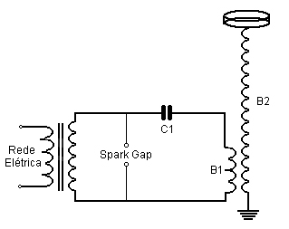
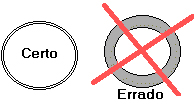

Bobina de Tesla
(Corrigido 16/03/07 18:00)
AVISO: cuidado com a alta tensão, a saída da bobina de tesla, pode não matar, mas causa queimaduras de até 3º grau, certifique-se sempre de que o raio esteja indo primeiro para um condutor e depois para sua mão (você pode segurar um bastão de ferro e atrair o raio com ele), a altas freqüências e a baixa corrente, não dão a sensação de choque, mas podem queimar. Mesmo com um condutor na mão não é recomendado atrair os raios com sua mão, pois em bobinas de tesla maiores, podem se causar queimaduras internas.
Depois de vários dias pesquisando sobre bobina de tesla e como elas funcionam, resolvi montar uma. No começo tentei com um Flyback, não tive sucessos (Porém agora já sei como montar com um flyback, postarei algum dia o tutorial com flyback ou bobinas de ignição auto motiva).
O Principio de funcionamento da bobina de tesla, é bem simples, sendo fácil de qualquer um montar. Abaixo vai um esquema básico:

Funcionamento
O Transformador para neon, carrega o capacitor C1 quase que diretamente através da bobina B1, quando a carga chega na voltagem ajustada pelo Spark Gap, o mesmo abre um arco, descarregando o capacitor sobre a bobina B1.
Como a bobina B1 está acoplada magneticamente a bobina B2, a energia de B1 é gradualmente passada para B2, como o numero de espiras do secundário é maior, a voltagem aumenta e a corrente cai.
Se a energia transferida não foi suficiente no secundário, ela irá retornar para o primário, gerando outra oscilação. Quando a energia é suficiente no secundário, o Spark Gap tende a se fechar, isolando a energia no secundário, onde ela ficara oscilando até se dissipar. Logo após o ciclo se inicia novamente carregando o capacitor.
Mas não se preocupe, isso normalmente ocorre milhares vezes por segundo dando um raio continuo (se bem ajustada) na saída da tesla.
Montagem
A primeira coisa a se fazer é comprar as peças nescessarias, abaixo darei uma lista e algumas fotos:
Um transformador de neon (NST) de pelo menos 5kV 20mA (Eu usei um de 30mA)
Capacitores de poliester (de cerâmica também serve, mas os de poliester são melhores para essa aplicação) de 1600V
Tubos de cobre para o centelhador ou dois parafusos (de tungstênio preferencialmente).
Um rolo de fio 29 esmaltado (podem ser usados outros fios, de preferencia mais finos), cerca de 200 Gramas podem ser suficientes para montar varias bobinas de tesla.
Um tubo de PVC de 23cm de altura 4cm de diâmetro, não necessitando ser precisamente isso.
Um pouco de fio 18 ou mais grosso, para a bobina primaria (precisa ser um fio bem grosso, podendo ser um tubo de cobre)
Um variac (Opcional), para o ajuste da energia de entrada.
Montando:
Você pode começar enrolando a bobina secundaria, que é o que vai levar mais tempo, comece prendendo o fio em um dos extremos do tubo de PVC, prendendo-o com durex ou colando com algo, de uma forma que fique bem firme, começe enrolando os fios lado a lado, evitando espaços entre eles.
Obs: Não se pode fazer sobreposição de fios, isso é estritamente proibido!

Os fios precisam estar um do lado do outro, evitando-se espaços entre eles, faça isso até o outro extremo, e quando terminar prenda firmemente de novo a ponta. Eu levei 3:30 para enrolar a minha, mas no final deu tudo certo, apesar de ter ficado uns espaços.
Abaixo vai uma foto de como ficou a minha (Reparem, ficaram alguns espaços em alguns lugares, isso não é bom para uma bobina de tesla, provavelmente isso me diminuiu umas 20 espiras que eu poderia ter enrolado a mais):
Depois de enrolada a bobina, pode-se enverniza-la para aumentar a durabilidade e aumentar a permanência dos fio, para que eles não se mecham.
Agora é a vez de montar o banco de capacitores, eu fiz um banco de capacitores calculado para ter uma voltagem acima do que o transformador prove, para ter uma segurança de que qualquer pico, eles não estourem.
São 6 Capacitores de 7n2 Farads, ligados em serie, ocasionando aproximadamente 1.1nF (1n1 Farads), eu poderia ter ligado 5 em serie, tendo mais capacitancia (1,5nF), mas ficaria bem na beira da voltagem limite do transformador, como eu tinha mais eu preferi deixa mais seguro e colocar mais.
O Centelhador, eu fiz de 3 tubos de titânio e 2 tubos de cobre móveis para o ajuste fino. Eu achei tubos de titânio em sucata, são bem melhores que os de cobre, e duram mais. Para os de cobre eu coloquei um ventilador para esfria-los, pois sem ele, o cobre ira corroer com a temperatura, e outro detalhe, conforme a temperatura do centelhador sobe, a resistência dele também sobe, e em conseqüência o raio da bobina de tesla, diminui. Abaixo uma foto do centelhador:
A distancia dos tubos, deve ser mínima, cerca de 1mm, e eles precisam estar perfeitamente alinhados, se não quando você ligar o arco dará preferencia a uma posição do que a outra, aumentando o foco de calor e diminuindo a capacidade de “entrar em curto”.
O Transformador para neon pode ser comprado (Cerca de R$250 um novo), como pode ser feito, no site Feira de Ciências, há uma explicação de como monta-lo:
http://www.feiradeciencias.com.br/sala03/03_01.asp
Eu usei um Transformador Linsa de 5kV 30mA (foto abaixo) que pode gerar até 25cm de arcos.
A bobina primária deve ser enrolada de forma plana ou cônica em uma espiral de Arquimedes. Podendo ser também em forma horizontal sem ser em espiral (Não recomendado).
A minha tem 18 espiras de fio 18 encapado (o mesmo usado para fazer fiação da rede elétrica doméstica), para ajustes futuros se recomenda fazer cortes de espira em espira (cortes pequenos, só para tirar a isolação do fio) de forma que eles fiquem longe um dos outros, formando “taps”.
Na minha bobina primária não há isso, pois eu fui cortando o fio de pouco em pouco até acertar o ponto certo. Abaixo uma foto da minha bobina primária:
Bom, tudo preparado, agora é só ligar, aqui vai novamente o esquema da bobina de tesla para saber como ligar:
Testando
Minha bobina finalizada:
Para testar, tente ligando e veja se funciona, provavelmente a saída do arco será pequena, ou o centelhador não irá conduzir. Ajuste a distancia do centelhador, se for os parafusos, tente ir afastando (caso ele abra cedo de mais) ou aproximando até ele abrir o arco, faça isso sempre desligando a bobina de tesla da tomada, o choque do circuito primário é fatal. Mude também o conector no “tap”. Depois de tudo ajustado, você pode conseguir até 20cm de raio (dependendo da sua bobina secundaria), eu consegui aqui 12cm, com a bobina mostrada na foto. Eu levei alguns meses para ajustar a minha bobina, mas eu troquei de fio primário muitas vezes, o melhor que consegui até agora foi o fio 18.
Para uma melhor performance, faça um toroid de alumínio (pode ser uma roda de um carrinho encapado com papel alumínio) para carregar energia e aumentar um pouco o raio de saída.
Boas faíscas! E lembre-se cuidado com a alta tensão, a saída da bobina de tesla, pode não matar, mas causa queimaduras de até 3º grau, certifique-se sempre de que o raio esteja indo primeiro para um condutor e depois para sua mão (você pode segurar um bastão de ferro e atrair o raio com ele), a altas freqüências e a baixa corrente, não dão a sensação de choque, mas podem queimar.
Para maiores informações consulte um documento feito por Antonio Carlos M. de Queiroz:
http://www.coe.ufrj.br/~acmq/tesla/BobinadeTesla.pdf
Atualizado (14/03/07):

Esta obra de EnergyLabs Brasil, foi licenciada com uma Licença Creative Commons - Atribuição - Partilha nos Mesmos Termos 3.0 Não Adaptada.
Permissões adicionais ao âmbito desta licença podem estar disponíveis em http://www.energylabs.com.br.